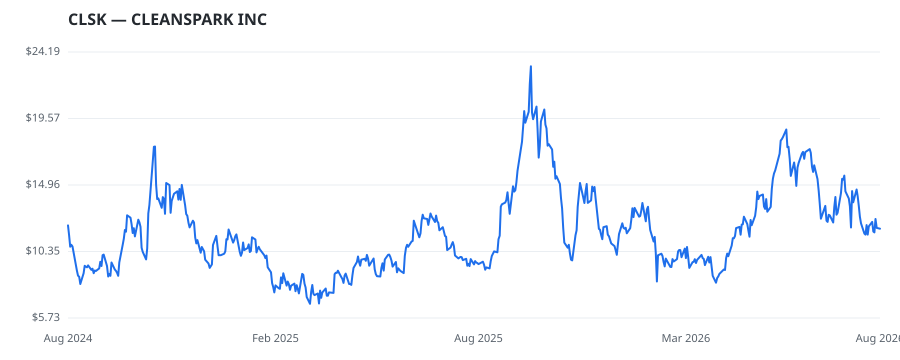

bullish · bearish · n/a — dots: price>SMA10 · SMA10>SMA50 · SMA50>SMA200 · up>down volume (20d)
Banks · mid cap

Cleanspark Inc. is a data center developer that, until recently, focused exclusively on bitcoin mining. The company provides scalable, energy-efficient digital infrastructure across the United States. The Company has a sole reporting segment, which is the bitcoin mining segment. FINANCE SERVICES · website
| Revenue | $766.3M | Net income | $352.9M |
|---|---|---|---|
| Operating income | $318.9M | Diluted EPS | — |
| Assets | $3.2B | Equity | $2.2B |
🛒 Newly buying: Goodlander Investment Management, LLC (+67%, 3.4% of book) · HIMENSION CAPITAL (SINGAPORE) PTE. LTD. (+44%, 0.1% of book)
| Fund | Fund alpha vs SPY | Position | % of book |
|---|---|---|---|
| Goodlander Investment Management, LLC | +67% | $11M | 3.4% |
| HIMENSION CAPITAL (SINGAPORE) PTE. LTD. | +44% | $1M | 0.1% |
Hedge data: SEC EDGAR 13F · ranked funds beat SPY in >50% of their quarters · fund alpha = mirror-portfolio return minus SPY.